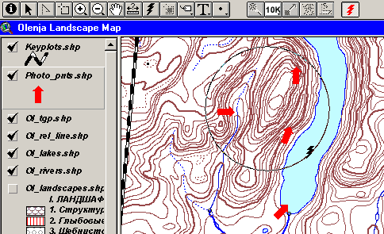

Hotlink на область (уменьшение точности hotlink)
Описание видоизмененного инструмента "горячей связи"
при участии И.Поспелова
Связывание объектов темы ArcView с внешними файлами используется довольно часто - как правило, это графические изображения, WEB-страницы, текстовые документы и т.д. С описываемой ниже проблемой пришлось столкнуться при привязке фотографий к карте местности. При этом использовался широко распространенный просмотровщик графики IrfanView, достоинство которого - в отсутствии необходимости инсталляции (достаточно переместить файлы IrfanView в каталог с любым именем, и программа будет работать оттуда, в том чиcле с CD).
В Help ArcViev 3.x приведен образец внедряемого в проект скрипта для запуска любого приложения для открытия документов, прописанных в поле горячей связи атрибутивной таблицы темы. Этот скрипт был переработан и использован для вызова фотографий, привязанных к точкам с указанием направления съемки.
При использовании точечной темы с крупными символами выявиляется следующая неприятность - на мониторах с высоким разрешением (1024х768 и выше) инструментом Hotlink стало довольно трудно попасть в объект (при использовании разрешения 1280х1024 иногда это сделать еще сложнее, причем попасть надо было в весьма условный "центр точеного объекта" - символа).
В процессе анализа проблемы выяснилось, что в системном запросе, определяющем точность инструмента (кстати, не только Hotlink, а и инструмента выбора) зафиксирована область в 3 пиксела экрана. Впрочем, это объяснимо - когда разрабатывалась ArcView для Windows (середина 90х годов) мониторы с разрешением выше 1280х1024 были не столь широко распространены, как сейчас.
Область поиска самого инструмента Hotlink по умолчанию равняется 3 пикселам, что недостаточно на больших экранных разрешениях. К сожалению запрос FindbyPoint(p), которым собственно и осуществляется поиск, не позволяет менять этот допуск.
Решением проблемы было изменение самого принципа действия инструмента - поиск объектов было необходимо реализовать не по точке, а по области экрана. Для этого был разработан нижеприведенный скрипт.
!!!Внимание В случае использовании скрипта, для использования возможности задания области точности вам нужно будет также создать для него кнопку на панели кнопок (подробнее об этом здесь) |
Принцип его работы прост, используется не поиск по точке (FindbyPoint) а поиск по области (окружности - FindbyCircle), что также позволяет интерактивно задавать эту область, чтобы не испытывать трудности с "попаданием" в нужный символ.

Рис.1. Задание области реагирования на hotlink, с помощью клавиши shift

Рис.2. Вызов внешнего просмотровщика для графики (IrfanView, справа)
Дата создания: 25.11.2002
Автор(ы): Максим Дубинин